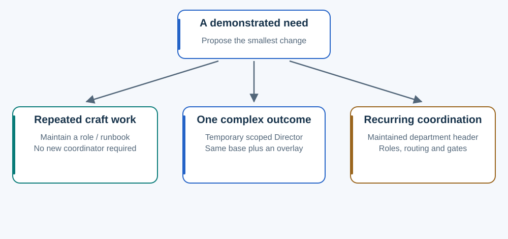

Expand when work exposes a need.
More tasks do not automatically require more hierarchy.

| Signal | Smallest useful response | Decision and follow-through |
|---|---|---|
| Accepted knowledge keeps being rediscovered. | Maintain a craft reference or named role. | Owning maintainer preserves scope and puts it on the selected task path. |
| One outcome has dependent workers and repeated integration/rework. | Assign a temporary scoped Director. | Project Director supplies the same base plus a bounded overlay and retains user-facing acceptance. |
| Several outcomes repeatedly need shared routing, knowledge and ownership. | Maintain a department entrypoint. | Authorized maintainer implements the header, roles and discovery pointer; next use checks uptake. |
A department has a small front door
Its header tells callers when to use it, what to supply, what it returns and what decisions remain reserved. Internal workers and organization can evolve behind that interface.
An accepted structural proposal does not create files or routing. Someone with the actual authority must implement it. Arbitrary files are not automatically discovered.
Three or thirty-five tasks can remain flat. Three corrections are not a department-creation threshold. Independent testing stays independent as instruction packages compose.